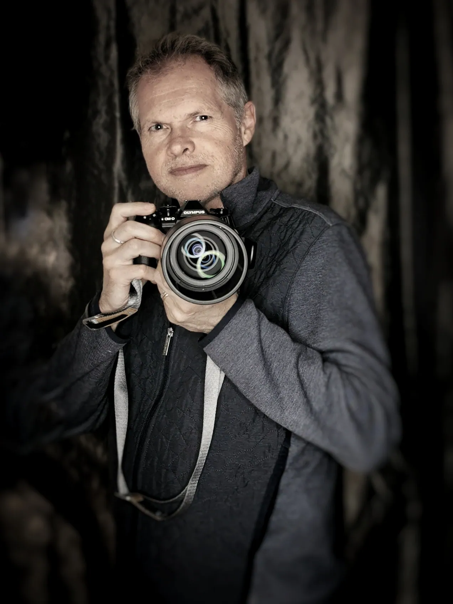

Parcours
Laurent Barrera
Auteur et photographe, atelier à Toulon (Var). Ingénieur géologue et vigneron en Provence avant de se consacrer à l’image et à l’écriture.

La démarche
La nature est mon terrain d’expression privilégié : mon refuge, mon laboratoire, ma première source d’inspiration. Son mystère, ses lumières mouvantes, ses instants fragiles nourrissent mon regard et mon écriture. Photographe et auteur, j’explore ces éclats d’éphémère comme on façonne des haïkus visuels : des images épurées, denses, ciselées, qui invitent à la poésie et ouvrent un dialogue silencieux avec celui qui les contemple.
Chaque photographie devient trace, résonance, fragment de destin. Cette quête intime m’a naturellement conduit vers le Japon. J’y ai trouvé une esthétique, un monde où la beauté réside dans l’impermanence, dans la fragilité des choses, dans le presque rien.
De 2019 à 2026
Les cernes d’un parcours
Chaque année est un cerne. Plus l’année a été riche, plus le cerne est épais.
De 2019, au cœur, à 2026, en pointillé : l’année n’est pas terminée.
2019 1 prix
- 2019PrixGrand prix du concours des Rencontres d’Arles / Olympus
2020 2 prix
- Nov. 2020PrixPremier prix du concours Olympus / Wilderness Safaris (nature sauvage)Série Horses Kami →
- Déc. 2020PrixCoup de cœur du jury, 1er concours d’art contemporain ART4COMPETITION
2021 4 expos · 4 prix · 1 conf. et proj.
- Janv. 2021PrixMonochrome Photography Awards 2020 (Royaume-Uni) : mention honorable
- Févr. 2021PrixTokyo International Foto Awards 2020 : mention honorable
- Mai 2021ExpositionExpo4Art, Halles des Blancs-Manteaux, Paris« Mes animaux totem »
- Sept. 2021ExpositionFestival Spot Nature, Jardins suspendus, Le HavreSérie Horses Kami →
- Oct. 2021ExpositionRencontres photographiques du Prieuré, Salaise-sur-SanneSérie Horses Kami →
- Oct. 2021ConférenceConférence aux Rencontres photographiques de Salaise-sur-Sanne
- Oct. 2021PrixConcours international CEWE : sélection « top 1000 »Série « Ibex Dream »
- Nov. 2021ExpositionPhotomenton, MentonSérie Horses Kami →
- Déc. 2021PrixBudapest International Foto Awards : Silver AwardSérie Horses Kami →
2022 3 expos · 3 prix · 2 publications · 2 conf. et proj.
- Févr. 2022PublicationLe petit livre des Kami, zine tiré à 20 exemplaires
- Mai 2022ExpositionGravity Festival, Fondation GoodPlanet, Paris
- Mai 2022 et 2023PrixPhotos primées et exposées au Gravity Festival, Fondation GoodPlanet
- Juin 2022ExpositionFestival Photo dans Lerpt (près de Saint-Étienne)
- Juin 2022ConférenceClub photo Objectif Image, Lyon« Influences des esthétiques japonaises »
- 30 juil. 2022ProjectionNuits photographiques de Pierrevert, 14e éditionSérie Carpes Koï →
- Sept. 2022PublicationLivre « Koï », 500 exemplaires numérotésSérie Carpes Koï →
- Oct. 2022ExpositionFestival photo de BesançonFinaliste du prix du jury
- 23 oct. 2022PrixPremier prix du livre photo, Festival international de NamurSérie Carpes Koï →
- 3 nov. 2022PrixPrix du jury Géo Magazine / Météo France pour L’Œil du climatJury présidé par Yann Arthus-Bertrand
2023 2 expos · 3 prix · 2 conf. et proj.
- 18 févr. 2023ProjectionNuit de la Photo, La Chaux-de-Fonds (Suisse)Série « Qui comme Ulysse »
- 27 mai 2023ProjectionPrésence(s) Photographie, MontélimarSérie Carpes Koï →
- Juin 2023Prix1er prix du jury, Carreau du Temple et Wipplay, festival Food Temple, Paris
- Été 2023ExpositionExposition solo « Art et vin », Domaine de la Suffrène, Bandol
- Juil. 2023Prix3e prix du jury « Mobilité écologie », Taco and co, Arles
- Oct. 2023ExpositionFestival Phot’Aix, Aix-en-Provence
- Oct. 2023PrixFinaliste du concours « Identité », festival photo de Bucarest
2024 7 expos · 2 prix · 2 presse · 1 conf. et proj.
- Début 2024ExpositionExposition solo, Galerie de l’Atelier, Six-Fours-les-Plages
- Févr. 2024ConférenceGalerie de l’Atelier, Six-Fours« Influences du shintoïsme, du bouddhisme et des esthétiques japonaises dans la démarche photographique »
- Févr.–mars 2024ExpositionExposition « Protean », Hôtel Spa Le Calendal, ArlesSérie Protean →
- Févr. 2024ExpositionExposition collective sur la mobilité, Galerie Putman, Arles
- Mars 2024PresseCouverture de la revue Hélas !, n° 8
- 2024PressePochette de l’album « Temps suspendu » de Richard DePaul
- Mai–juin 2024ExpositionExposition solo « Japon poétique et sacré », L’Adresse, Toulon
- 10–22 juin 2024ExpositionGalerie Marie Poscia, HyèresSérie Shintô →
- Juin 2024ExpositionDecagon Gallery, Brooklyn, New York« H2O, the essence of water »
- Nov. 2024PrixPhoto of the Month, Decagon Gallery, New York« Fixing clouds » (Réparer les nuages)
- Déc. 2024PrixLauréat du concours Photo Magazine, catégorie animauxSérie Animal →
- Déc. 2024–janv. 2025ExpositionGalerie de la Fontaine Obscure, Aix-en-Provence
2025 5 expos · 2 prix · 2 publications
- Avr.–juin 2025ExpositionRestaurant Canons, MontréalSérie Shintô →
- Mai 2025Exposition1er festival ART les Images, ArlesImpression sur papier japonais washi
- Mai 2025PrixCoup de cœur du jury, Wipplay et festival photo L’Homme et la MerExposé au Guilvinec, été 2025
- Juin 2025PrixFinaliste du concours « Paysage », Réponses Photo n° 380
- Été 2025ExpositionFestival Les Chemins de la Photo, BelpechSérie Shintô →
- Été 2025ExpositionOFF du festival d’Arles, restaurant Izakayan
- Automne 2025ExpositionFestival Chercheurs d’images, Grand-Champ (Bretagne)
- Oct. 2025PublicationFragrances du Japon, recueil de 17 nouvelles
- Déc. 2025PublicationEsthétiques japonaises en photographie
2026 1 expo · 3 publications · 4 presse
- Févr. 2026PublicationPleine Présence en Photographie
- Mars 2026Exposition« Les Escales artistiques », Docks de Marseille
- Avr. 2026PresseChasseur d’Images : Esthétiques japonaises sélectionné par la rédaction
- Mai 2026PresseRéponses Photo n° 389 : Pleine Présence dans la rubrique « L’essentiel »
- Juin 2026PresseChasseur d’Images n° 476 : entretien de quatre pages
- Juil. 2026PresseRevue Corridor Éléphant : texte « Apprendre à regarder moins »
- Sept. 2026PublicationEsthétiques japonaises en photographie, édition allemande
- 5 nov. 2026À paraîtreLes arbres sacrés du Japon, Éditions Le Prunier SULLY
Dates à confirmer 2 expositions
- Novembre, année à confirmerExpositionExpositions au Japon : Éphémère Tokyo
- Date à confirmerExpositionExposition solo à la mairie d’honneur de Toulon
Distinctions

- Rencontres d’Arles / Olympus Grand prix 2019
- Olympus / Wilderness Safaris Premier prix 2020
- Budapest International Foto Awards Silver Award 2021
- Festival international de Namur Premier prix du livre photo 2022
- Géo Magazine / Météo France Prix du jury 2022
- Carreau du Temple / Wipplay 1er prix du jury 2023
- Decagon Gallery, New York Photo of the Month 2024
- Photo Magazine Lauréat 2024

N° 476, juin 2026 : quatre pages et un entretien avec Benoît Gaborit

N° 389, mai 2026 : Pleine Présence dans la rubrique « L’essentiel »

Texte « Apprendre à regarder moins : vers une sensibilité néo-japoniste en photographie »

Revue n° 8, mars 2024 : photographie de couverture